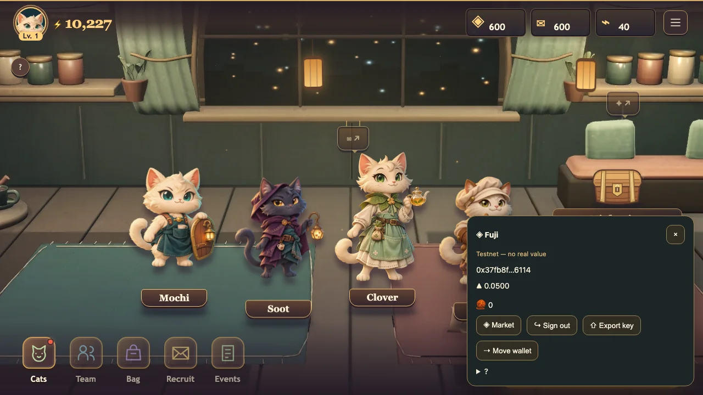
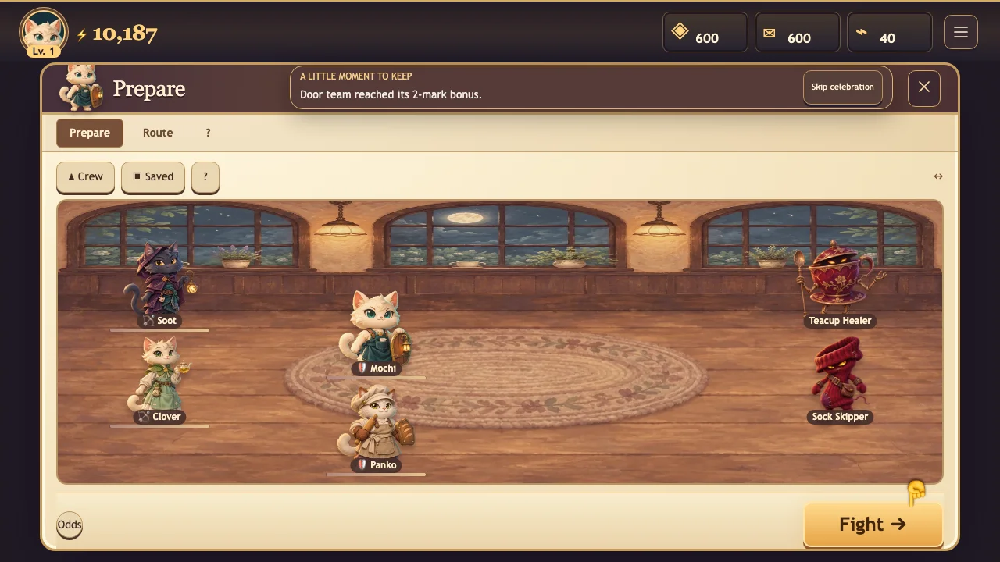
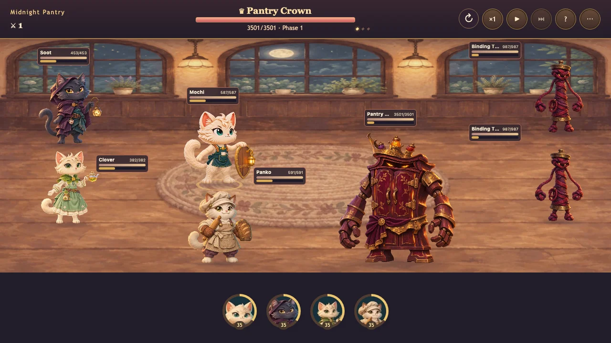
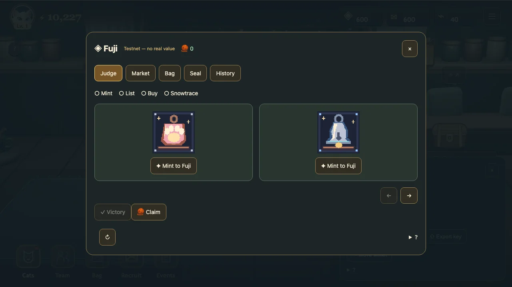

THE LANTERN · C2 + CHAINFour friends.
One night route.
Play the integrated guest build, inspect the painted skills, and try the local market loop. These are captures from the running game; the character slots remain ready for the designer's final files.
From the repository: pnpm demo:play. The default starts local Anvil. DEMO_CHAIN=fuji selects the configured public Fuji services; see the guide for public endpoint values.
4party slots
78combat-event effects
8passive-stat art previews
5.784 MBVFX runtime assets
01Enter as a guest
Open the local game, then choose Menu → Wallet → Play as guest. Close the wallet panel to return to battle. The Anvil API supplies test gas through the real guest flow.

02Set the formation
Arrange four companions across two staggered rows. Inspect target and skill choices before starting a fight.

03Watch the battle
Painted layers follow combat impact events. Boss phases, damage numbers and the compact HUD remain visible. This screenshot uses a coverage fixture; balance uses the separate real-play cohorts.

04Try the market
The server-run Judge encounter provides the isolated test entitlement. Mint, list, buy and cancel use real transactions on local Anvil. Campaign browser saves cannot authorize sealing.

Balance targets are not all met. The final model first loss is about 13 seconds early, normal-win HP medians remain high, and four item-screen cells retain 13pp estimates. Independent follow-ups and the full economy projection are reported separately. CHAIN's ordinary campaign authority and routine reward economics remain open; Treasure ownership stays cosmetic.